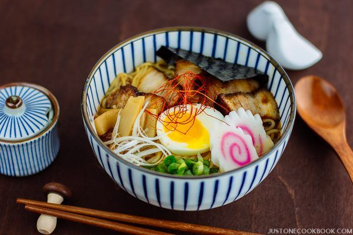

Authentic Japanese Food



I love Japanese food. Growing up in Hawaii allowed me to have the exposure, experience and gain knowledge of this beautiful culture at an early age. After moving to Seattle, I was determined to find restaurants that provided the traditional restaurant service to customers, as well as authentic dishes that satisfied my palate.
Whether you're craving a delicious, steamy bowl of Ramen or savory Okonomiyaki, below are some of my favorite Japanese restaurants in the Seattle area!
Tsukushinbo - International District
Suika Seattle - Capitol Hill
Sushi Kashiba - Downtown Seattle